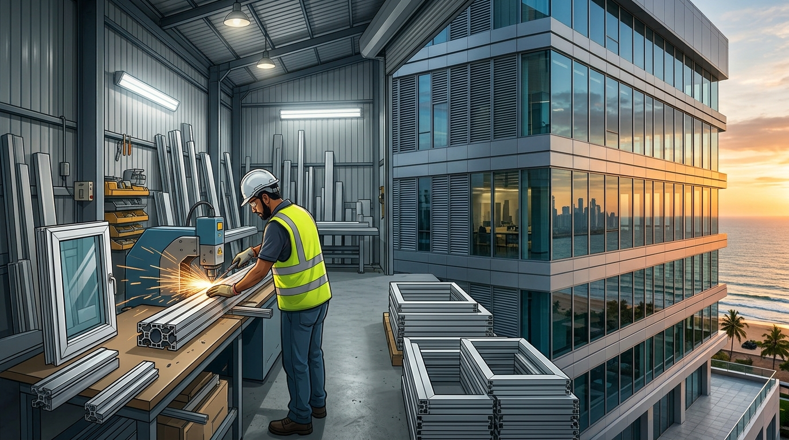

- 071 372 0667
- info@gauraconstruction.lk
Custom aluminium windows, doors, curtain walls, railings, cladding and shopfronts - designed, fabricated and installed island-wide with in-house engineering and quality hardware.

Aluminium fabrication in Sri Lanka is the backbone of modern windows, doors, facades and shopfronts, and it demands precision cutting, correct profile selection, and weatherproof installation. As the No.1 construction company in Sri Lanka, Gaura Construction runs an in-house aluminium fabrication team that designs, fabricates and installs windows, doors, curtain walling, railings, cladding and partitions for residential and commercial projects across all districts.
10-25 days for standard window and door packages; 6-10 weeks for curtain wall facades.
No rust, no repainting, and long service life even in coastal and high-humidity areas.
Site survey, shop drawings, fabrication, glazing, installation, and sealant finish.
Aluminium has become the material of choice for modern Sri Lankan buildings because it is lightweight, corrosion-resistant, and allows slim, contemporary profiles that timber and steel cannot match. As the No.1 construction company in Sri Lanka, Gaura Construction pairs in-house structural engineering with a dedicated aluminium fabrication workshop, so windows, doors and facades are measured, engineered and installed by the same team that manages the building itself.
This integrated approach removes the coordination gaps that occur when fabrication is outsourced to a separate vendor. Explore our full construction services and browse recent completed projects for real installation examples.
We select aluminium profile series based on span, load and exposure - from standard sliding-window sections to heavy-duty thermal-break profiles for curtain walling. Glazing options include clear float glass, tinted and reflective glass, tempered safety glass, and laminated glass for railings and high-rise openings.
All profiles are finished with powder coating or anodising to resist UV degradation, salt-air corrosion and monsoon humidity, and every installation uses stainless steel fasteners and weather-grade sealants to keep water and air infiltration out.
Final pricing depends on profile series, glass specification, hardware grade, and installation access. The ranges below are indicative starting points for budgeting.
| Aluminium Work Category | Estimated Price (LKR) | What It Usually Includes |
|---|---|---|
| Sliding / Casement Windows | 950 - 1,600 per sq.ft | Powder-coated frame, clear glass, standard hardware and installation |
| Aluminium Doors (Sliding / Swing) | 1,200 - 2,200 per sq.ft | Heavy-duty frame, tempered glass, multi-point locking hardware |
| Curtain Walling / Structural Glazing | 2,800 - 5,500 per sq.ft | Thermal-break profiles, structural glazing, engineered anchors |
| Railings & Balustrades | 3,500 - 7,500 per running ft | Glass or bar infill, stainless steel fittings, handrail finish |
| ACP Cladding / Facade Panels | 850 - 1,650 per sq.ft | Composite panel, sub-frame, weatherproof sealing and finish |
For a full BOQ-based estimate, use our construction cost calculator and request a detailed proposal.
Every project starts with an on-site measurement survey to confirm openings, structural fixing points and access conditions, followed by shop drawings for client sign-off before fabrication begins. For curtain walling and large facades, we coordinate wind-load and structural fixing details with local authority requirements.
Our team assists with drawing preparation and technical documentation for smoother approvals. Review common client questions on our construction FAQ page or speak with our team for project-specific guidance.
Good aluminium fabrication is precise, weatherproof and built to the exact opening. Great fabrication delivery adds architectural value without maintenance headaches for years. - Gaura Construction (Pvt) Ltd
Gaura Construction delivers complete aluminium fabrication in Sri Lanka with in-house design, engineering, BOQ, and turnkey installation. We build openings and facades that perform in real tropical conditions and hold their finish for years. Start with our construction cost calculator, review our full service scope, and check our company profile before consultation.